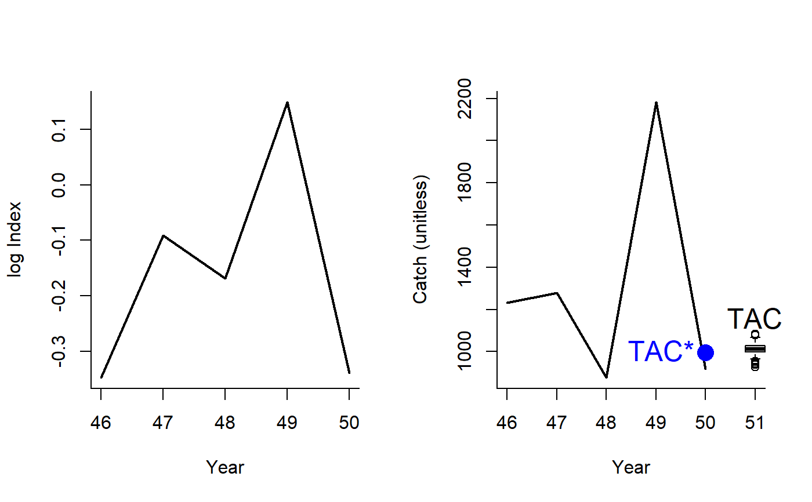
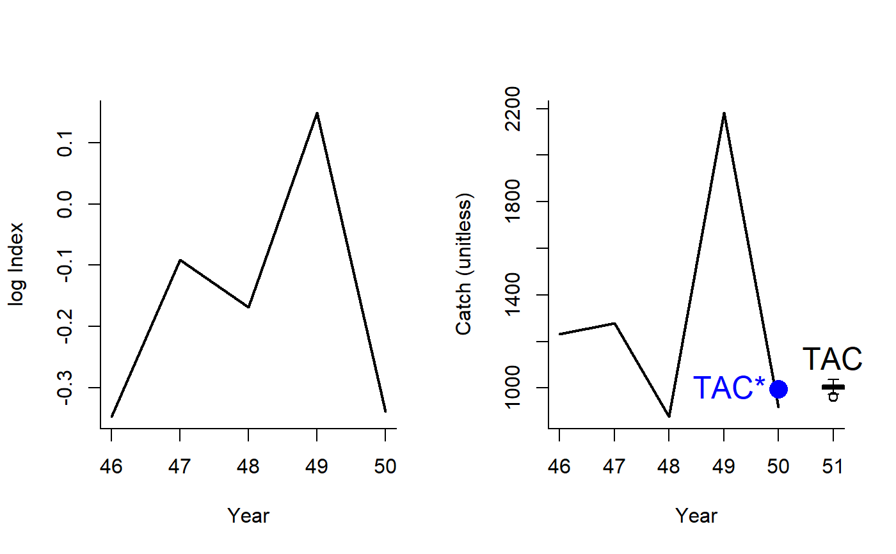

Islope1.RdA management procedure that incrementally adjusts the TAC to maintain a constant CPUE or relative abundance index.
Islope1(x, Data, reps = 100, plot = FALSE, yrsmth = 5, lambda = 0.4, xx = 0.2) Islope2(x, Data, reps = 100, plot = FALSE, yrsmth = 5, lambda = 0.4, xx = 0.3) Islope3(x, Data, reps = 100, plot = FALSE, yrsmth = 5, lambda = 0.4, xx = 0.4) Islope4(x, Data, reps = 100, plot = FALSE, yrsmth = 5, lambda = 0.2, xx = 0.4)
| x | A position in the data object |
|---|---|
| Data | A data object |
| reps | The number of stochastic samples of the MP recommendation(s) |
| plot | Logical. Show the plot? |
| yrsmth | Years over which to calculate index |
| lambda | A gain parameter controlling the speed in update in TAC. |
| xx | Parameter controlling the fraction of mean catch to start using in first year |
An object of class Rec with the TAC slot populated with a numeric vector of length reps
The TAC is calculated as:
$$\textrm{TAC} = \textrm{TAC}^* \left(1+\lambda I \right)$$
where \(\textrm{TAC}^*\) is \(1-xx\) multiplied by the mean catch from the past yrsmth years for the
first year and catch from the previous year in projection years,
\(\lambda\) is a gain parameter, and \(I\) is the slope of log index over the past yrsmth years.
Islope1: The least biologically precautionary of the Islope methods
Islope2: More biologically precautionary. Reference TAC is 0.7 average catch
Islope3: More biologically precautionary. Reference TAC is 0.6 average catch
Islope4: The most biologically precautionary of the Islope methods.
Reference TAC is 0.6 average catch and gain parameter is 0.2
See Data for information on the Data object
Islope1: Cat, Ind, LHYear, Year
See Online Documentation for correctly rendered equations
Carruthers et al. 2015. Performance evaluation of simple management procedures. ICES J. Mar Sci. 73, 464-482.
Geromont, H.F., Butterworth, D.S. 2014. Generic management procedures for data-poor fisheries; forecasting with few data. ICES J. Mar. Sci. doi:10.1093/icesjms/fst232
Other Index methods:
GB_slope(),
GB_target(),
Gcontrol(),
ICI(),
Iratio(),
Itarget1_MPA(),
Itarget1(),
ItargetE1()
#> TAC (median) #> 1117.679#> TAC (median) #> 1120.563#> TAC (median) #> 1126.593#> TAC (median) #> 1117.031